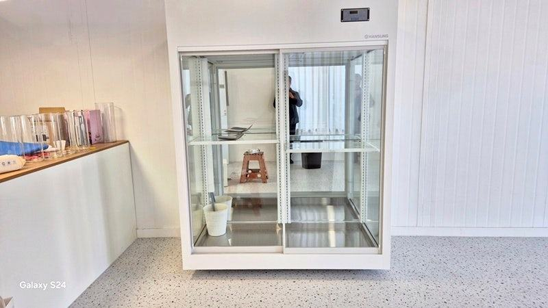
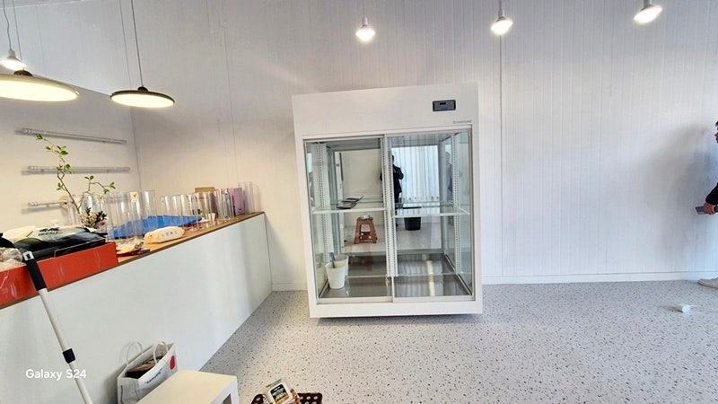
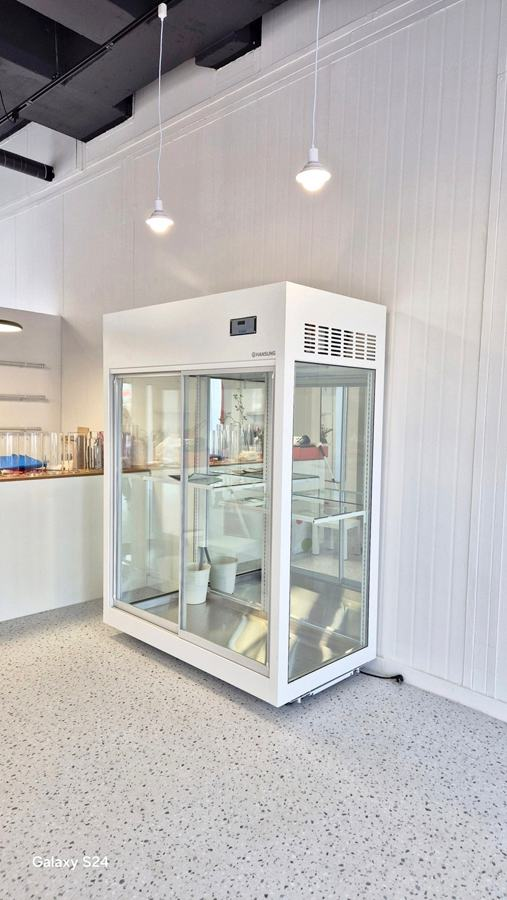

꽃냉장고
꽃집 폐기 줄이는 법, 꽃냉장고 안에서 시작하는 관리 순서

꽃집 폐기는 입고하자마자 줄기를 다듬어 물을 올리고, 꽃 종류에 맞는 온도 구역에 나눠 넣는 것만으로도 크게 줄일 수 있습니다. 여기에 줄기 길이에 맞게 선반을 옮기고, 도어 결로와 물통 위생을 관리하면 꽃냉장고 안에서 상하는 꽃이 눈에 띄게 줄어듭니다.
안녕하세요. 생화를 오래 지키는 꽃냉장고를 만드는 한성쇼케이스입니다.
꽃집 사장님들의 아침은 시든 꽃을 골라내는 일로 시작되는 경우가 많습니다. 어제 들어온 장미 끝이 처지고, 수국 잎이 마르고, 거베라 목이 꺾여 있으면 그날 첫 일이 버리는 일이 되죠.
생화는 원래 시간이 지나면 시드는 상품이라 폐기를 없앨 수는 없습니다. 하지만 같은 꽃을 들여와도 어떤 매장은 며칠 더 팔고, 어떤 매장은 금방 버립니다.
그 차이는 대부분 꽃냉장고 안에서 생깁니다.
오늘은 꽃집 폐기를 줄이기 위해 입고부터 진열, 마감까지 꽃냉장고를 중심으로 챙길 순서를 정리해 드리겠습니다.
1. 입고 직후 손질이 첫 단계
시장에서 들여온 꽃은 이동하는 동안 물을 제대로 먹지 못한 상태입니다. 포장을 풀자마자 줄기 끝을 사선으로 다시 자르고, 물에 잠길 아래쪽 잎을 떼어 낸 뒤 깨끗한 물에 꽂아 물을 올려 주세요.
물에 잠긴 잎은 금방 썩어 물을 탁하게 만들고, 그 물이 다른 꽃 줄기까지 막습니다. 손질을 미루고 박스째 꽃냉장고에 넣어 두면 차가운 곳에 있어도 꽃이 빨리 지칩니다.
- 줄기 끝 다시 자르기
- 물에 잠길 잎 떼어 내기
- 손질 후 꽃냉장고에 넣기
2. 꽃 종류에 맞게 온도 구역 나누기
대부분의 절화는 낮은 온도에서 오래가지만, 열대성 꽃은 너무 차가운 곳에 두면 냉해를 입어 꽃잎이 검게 변합니다.
한 냉장고 안에서도 냉기가 나오는 쪽과 문 쪽은 온도가 다르니, 민감한 꽃은 상대적으로 덜 차가운 자리에 두세요.
취급하는 열대성 꽃이 많다면 꽃냉장고 칸을 나누거나 별도 진열 공간을 마련하는 것이 폐기를 줄이는 지름길입니다.
같은 온도에 모두 넣어 두고 어떤 꽃만 계속 상한다면 온도 구역부터 의심해 보세요.
온도 구역을 나눴다면 칸마다 어떤 꽃을 두는지 작은 표를 붙여 두세요. 직원이 바뀌거나 바쁜 날에도 꽃이 엉뚱한 칸에 들어가는 일을 막을 수 있습니다.


3. 줄기 길이에 맞춘 선반 높이
꽃집은 계절마다 다루는 꽃과 줄기 길이가 달라집니다. 선반이 고정돼 있으면 긴 줄기 꽃은 꺾이거나 비스듬히 기대 놓이고, 짧은 꽃은 높은 칸에서 공간을 낭비합니다.
꽃끼리 꽉 끼어 있으면 꽃잎이 눌리고 냉기도 돌지 않습니다.
선반을 옮길 수 있는 구조라면 계절이 바뀔 때마다 높이를 다시 맞춰 주세요. 물통 사이에 여유를 두어 바람이 지나갈 길을 만들어 주는 것도 중요합니다.
4. 결로와 조명, 물통 위생
도어 단열이 약하면 유리에 물방울이 맺히고, 그 습기가 꽃잎에 곰팡이를 부르기도 합니다. 결로가 잦다면 도어 패킹과 매장 습도를 확인해 보세요.
조명은 너무 밝고 눈부시면 꽃 색이 실제와 다르게 보이고, 꽃에 가까울수록 열도 전해집니다.
물통은 매일 물을 갈고 주기적으로 세척해야 합니다. 같은 통을 계속 쓰면 안쪽에 낀 물때가 줄기를 막아 물을 올리지 못하게 만듭니다.
먼저 들어온 꽃을 앞쪽에 두고 판매하는 순서도 함께 지키면 버리는 꽃이 줄어듭니다.
마감 때는 팔지 못한 꽃을 바로 버리기보다 상태별로 나눠 보세요. 꽃잎 끝만 상한 꽃은 다듬어 소품 꽃다발로 돌리고, 버린 꽃 종류를 기록해 두면 다음 주문량을 정하는 기준이 됩니다.
- 매일 물 갈기와 물통 세척
- 먼저 들어온 꽃을 앞쪽에
- 도어 결로와 조명 눈부심 확인
체크리스트
- 입고 즉시 줄기 손질과 물올림
- 열대성 꽃 냉해 주의 자리
- 계절별 선반 높이 조정
- 물통 사이 냉기 통로
- 도어 결로 점검
- 매일 물 교체와 선입선출
현장에서 자주 보는 경우: 선반이 고정돼 계절 꽃을 제대로 못 담을 때
꽃집 창업 상담을 하다 보면 가격과 디자인만 보고 꽃냉장고를 골랐다가 운영하면서 아쉬움을 느끼시는 경우를 자주 봅니다.
대표적인 것이 선반이 고정형이라 계절마다 바뀌는 꽃의 줄기 길이에 맞춰 진열을 바꿀 수 없는 경우입니다.
눈부심이 심한 조명 때문에 꽃 색이 과하게 보이거나, 도어 단열이 약해 결로로 매장 밖에서 꽃이 잘 안 보이는 문제도 함께 나옵니다.
그래서 맞춤제작 상담에서는 매장 폭에 맞춘 크기, 이동식 선반, 눈부심을 줄인 조명, 콤프레셔 효율과 도어 단열까지 함께 확인해 드립니다.





| 구분 | 일반 기성 쇼케이스 | 맞춤제작 |
|---|---|---|
| 사이즈 | 정해진 몇 종류 중 선택 | 매장에 맞춰 1200~1800 선택 |
| 컬러 및 마감 | 선택 폭 좁음 | 매장에 맞춰 3가지 선택 가능 |
| 조명 및 선반 | 고정형이 많음 | 눈부심 방지 조명, 이동식 선반 |
| AS 기간 | 업체마다 다름 | 구매 후 1년 무상 AS |
자주 묻는 질문
꽃냉장고 온도를 낮출수록 꽃이 오래가나요?
대부분의 꽃은 낮은 온도에서 오래가지만, 열대성 꽃은 너무 차가우면 냉해를 입습니다. 취급하는 꽃 종류에 맞춰 자리와 구역을 나누는 것이 더 중요합니다.
꽃냉장고에 과일이나 음료를 같이 넣어도 될까요?
권하지 않습니다. 일부 과일에서 나오는 가스가 꽃을 빨리 시들게 할 수 있고, 문을 여는 횟수도 늘어나 온도가 흔들립니다.
쓰고 있는 꽃냉장고 선반을 이동식으로 바꿀 수 있나요?
내부 구조에 따라 가능 여부가 다릅니다. 모델명과 내부 사진을 보내 주시면 선반 교체가 가능한지, 다른 방법이 있는지 안내해 드립니다.
매장 조건에 맞춰 만드는 한성쇼케이스
원하시는 제품 사진과 설치할 공간 사진만 보내 주셔도 매장에 맞는 구성을 추천해 드립니다.
- 전국 240여 개 A/S 전담 센터 운영
- 본사 대량 자재 매입으로 품질 대비 합리적인 가격
- 유럽제·삼성 냉각 콤프레셔 적용
- 국내 최초 쇼케이스 전문 디자이너 상주
매장 폭과 원하는 진열 구성을 알려 주세요. 실측과 견적을 안내해 드립니다.
031-986-2458